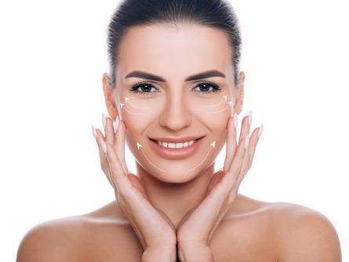
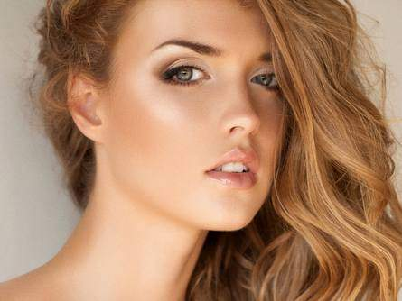
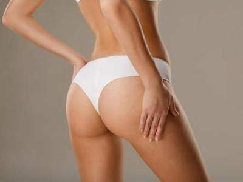

Op. Dr. Alper
Burak Uslu
Estetik cerrahide bilimsel yaklaşım, doğal sonuçlar ve kişiye özel planlama.


Hakkımda
Plastik, Rekonstrüktif ve Estetik Cerrahi Uzmanı
Op. Dr. Alper Burak Uslu 1988 yılında Ankara’da hayata geldi. İlk & ortaokul ve lise eğitimini Ankara Tevfik Fikret Lisesi’nde tamamladı ve “Baccalauréat Français” (Fransız lise mezuniyet diploması) almaya hak kazandı. Dünyanın en eski tıp fakültesi kabul edilen Montpellier Üniversitesi Tıp Fakültesi’nden kabul almasına karşın tıp eğitimine 2005 yılında Ankara Başkent Üniversitesi Tıp Fakültesi’nde başlayarak 2011 yılında mezun oldu ve “Tıp Doktoru” unvanını aldı. Tıpta uzmanlık sınavında yüksek başarı göstererek Ankara Numune Eğitim ve Araştırma Hastanesi Plastik, Rekonstrüktif ve Estetik Cerrahi bölümüne yerleşti. 2012 yılında başladığı bu klinikteki uzmanlık eğitimini 2017 yılında tamamladı. Bu süreçte çok sayıda kongre ve eğitime katıldı. 2014 yılında Almanya Frankfurt Goethe Universität’te mikrocerrahi eğitimini aldı. Asistanlığı süresince estetik cerrahi, el cerrahisi, rekonstrüktif mikrocerrahi, ağız-yüz-çene (maksillofasiyal) cerrahisi, yanık, baş-boyun tümör cerrahisi ve rekonstrüksiyonları, alt ekstremite travmaları ve rekonstrüksiyonları alanlarında sayısız operasyon gerçekleştirdi. 2017 yılında Türk Plastik, Rekonstrüktif ve Estetik Cerrahi Derneği ve 2018 yılında Avrupa Plastik Cerrahi Kurulu (EBOPRAS) tarafından düzenlenen yazılı ve sözlü olmak üzere ikişer aşamalı yeterlilik sınavlarına katılmış, bunları ilk denemede başarıyla geçerek Türk ve Avrupa Board Yeterliliği’ni almıştır.
Dr. Alper Burak Uslu 2018-2020 yılları arasında mecburi hizmetini Karaman Devlet Hastanesi’nde Plastik, Rekonstrüktif ve Estetik Cerrahi uzman hekimi olarak gerçekleştirmiş, 2020-2021 yılları arasında İstanbul Haseki Eğitim ve Araştırma Hastanesi’nde görev yapmış ve akademik çalışmaların yanı sıra asistan hekimlerin eğitiminde rol almıştır. 2021 Eylül’de başvurduğu Almanya Münster eyalet yönetimi tarafından Tıp Eğitimi Denkliği Almanya’da kabul edilmiştir. 2021 yılında kamu görevinden ayrılarak Vanity Estetik kliniği bünyesinde ağırlıklı olarak Estetik Cerrahi alanında çalışmaya başlamış ve şu an serbest hekim olarak Estetik Cerrahi alanında çalışmaya devam etmektedir. Mükemmelliği nihai hedef olarak belirleyen Dr. Uslu bu hedefe ulaşmak ve hastalara mümkün olan en iyi tedaviyi sağlamak için bir cerrahın kendini sürekli güncellemesi ve sınırlarını zorlaması gerektiğini düşünmektedir.
Estetik Cerrahi Uygulamaları

Burun Estetiği
Burun Estetiği İstanbul Burun estetiği İstanbul, burun dokularının şekillendirilmesi ve burunla alakalı estetik problemlerin giderilmesi amacıyla gerçekleşen özel bir operasyondur. Yüzün merkezinde yer alan burun, yüzün estetik bütünlüğü ve çekiciliği açısından büyük bir öneme sahiptir. Burunda yer alan estetik problemler yüzün estetik bütünlüğünü olumsuz etkileyebilir. Burun estetiği İstanbul hem bu olumsuzlukları gidermek hem de çekici […]
Uzmanlıklar
Yüz Germe
Yüz Germe İstanbul Yüz germe İstanbul, yüz dokularının yeniden düzenlenmesi; böylece yüzde meydana gelen sarkmaların ve kırışıklıkların giderilmesi amacıyla gerçekleştirilen özel bir cerrahi operasyondur. Yüzde yer alan yağ dokuları gibi yumuşak dokular, zaman içerisinde gerek çevresel etmenler, gerekse de yaşlanma gibi nedenlerden yıpranırlar. Bu yıpranma sebebiyle de sarkarak bireyin olduğundan daha yaşlı görünmesine neden olurlar. […]
Uzmanlıklar
Liposuction
Liposuction İstanbul Liposuction İstanbul, erimeye karşı direnç kazanmış yağ dokularını almak, bireyin çekici vücut hatlarına kavuşabilmesini sağlamak amacıyla yapılan bir uygulamadır. Bireylerin karın, basen, kalça ve benzer bölgelerinde sporla veya diyet ile erimeyen yağ kitleleri olabilir. Bu kitleler bulundukları bölgelerin hatlarını gizleyebilirler. Liposuction işlemi sayesinde bahsi geçen yağ dokularını, bölgedeki diğer dokulardan ayırmak, kalan yağ […]
Uzmanlıklar
Kalça Estetiği
Kalça Estetiği İstanbul Kalça estetiği İstanbul, kalçaları şekillendirmek, kalçalara yuvarlak ve çekici bir görünüm kazandırmak amacıyla yapılan özel bir operasyondur. Kalçalar vücudun merkezinde yer alırlar ve beden görünümü için son derece önemlidirler. Bu yüzden bireyler, beden ölçüleriyle uyumlu, çekici ve belirgin kalçalara sahip olmak amacıyla kalça estetiğine başvururlar. Yazımızın devamında ‘’Kalça estetiği nasıl yapılır?’’, ‘’Popo […]
Uzmanlıklar
Meme Büyütme
Meme Büyütme İstanbul Meme büyütme İstanbul, memelerin büyütülmesi ve şekillendirilmesi amacıyla yapılan özel bir estetik operasyonudur. Memelerin boyutu ve biçimi kadın bedeninin estetik bütünlüğü açısından son derece önemlidir. Bazı bireyler genetik sebeplerden küçük memelere sahip olabilirler. Bu son derece doğaldır. Küçük memelere sahip olan bazı bireyler estetik tercihleri sebebiyle memelerini büyütmek isteyebilir, bu amaç doğrultusunda […]
Uzmanlıklar
Meme Küçültme
Meme Küçültme İstanbul Meme küçültme İstanbul, memelerde yer alan fazla yağ ve deri dokusunun alınması, büyük memelere bağlı ortaya çıkan sorunların giderilmesi gibi amaçlar doğrultusunda gerçekleşen operasyondur. Halk arasında büyük memelerin, her zaman çekici bir görünüm oluşturduğuna yönelik yanlış bir inanış vardır. Bununla birlikte çoğu zaman memeleri çekici kılan şey, memelerin birbirleriyle ve omuz genişliği […]
Uzmanlıklar
Botoks
Botoks İstanbul Botoks İstanbul, cilt kırışıklıklarını ortadan kaldırmak, cilde pürüzsüz ve genç bir görünüm kazandırmak amacıyla yapılan özel bir uygulamadır. Yüz cildinin altında yüz ifadelerinin ve mimiklerin oluşmasını sağlayan kas dokuları yer alır. Bu dokuların aşırı kullanımı ve ilerleyen yaş gibi faktörler sebebiyle zaman içerisinde cilt yüzeyinde kırışıklıklar ve çizgiler meydana gelebilir. Botoks uygulaması bu […]
Uzmanlıklar
Dolgu Uygulamaları
Dolgu Uygulamaları İstanbul Dolgu uygulamaları İstanbul, yüz hatlarının şekillendirilmesi ve hacim kaybına bağlı meydana gelen estetik problemlerin giderilmesi amacıyla yapılan özel bir uygulamadır. Cilt dokusu ile kemikler arasında, kaslar ve yağlar gibi yumuşak dokular yer alır. Bu dokular sayesinde cilt hacim kazanır ve canlı bir görünüm elde eder. Ancak bazı durumlarda, ilerleyen yaş, genetik etmenler […]
UzmanlıklarNasıl İlerliyoruz?
Konsültasyon
Beklentileriniz dinlenir, yüz/vücut analizi yapılır ve seçenekler açıkça anlatılır.
Kişisel Planlama
Anatominize ve hedeflerinize uygun, gerçekçi ve kişiye özel bir plan hazırlanır.
Operasyon & Takip
İşlem uygulanır; iyileşme sürecinde düzenli kontrollerle yanınızda olunur.
Op. Dr. Alper Burak Uslu
Plastik, Rekonstrüktif ve Estetik Cerrahi · M.D, FEBOPRAS
Uluslararası Üyelik ve Sertifikalar
Uluslararası ve ulusal plastik cerrahi kuruluşlarının aktif üyesi.